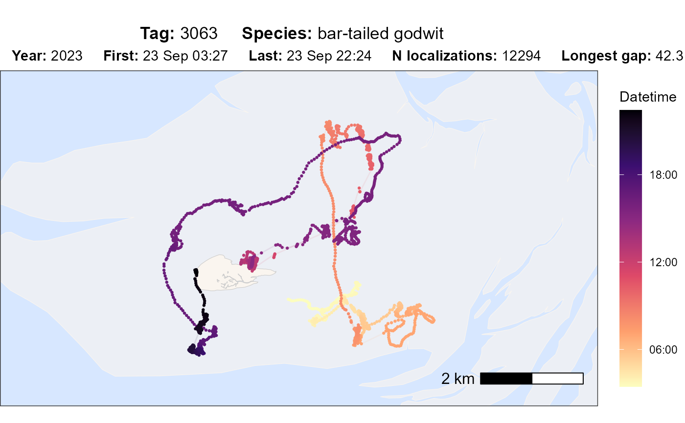
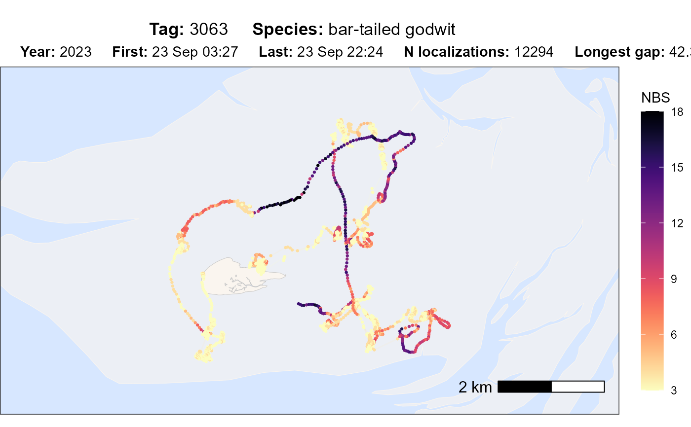
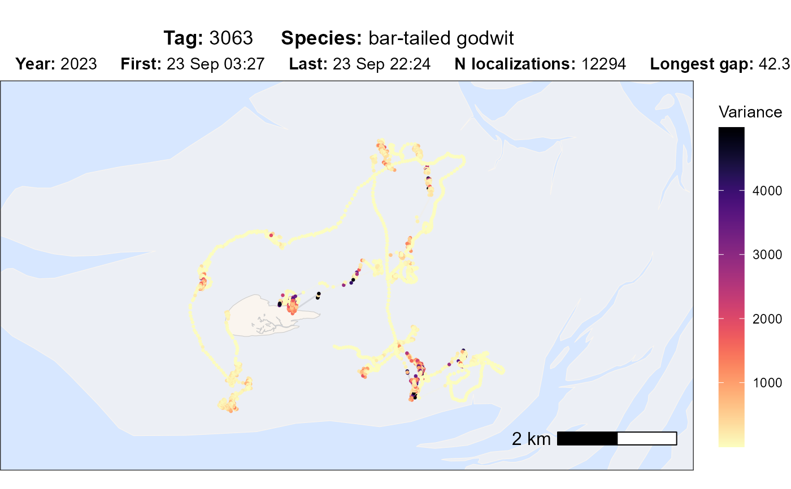
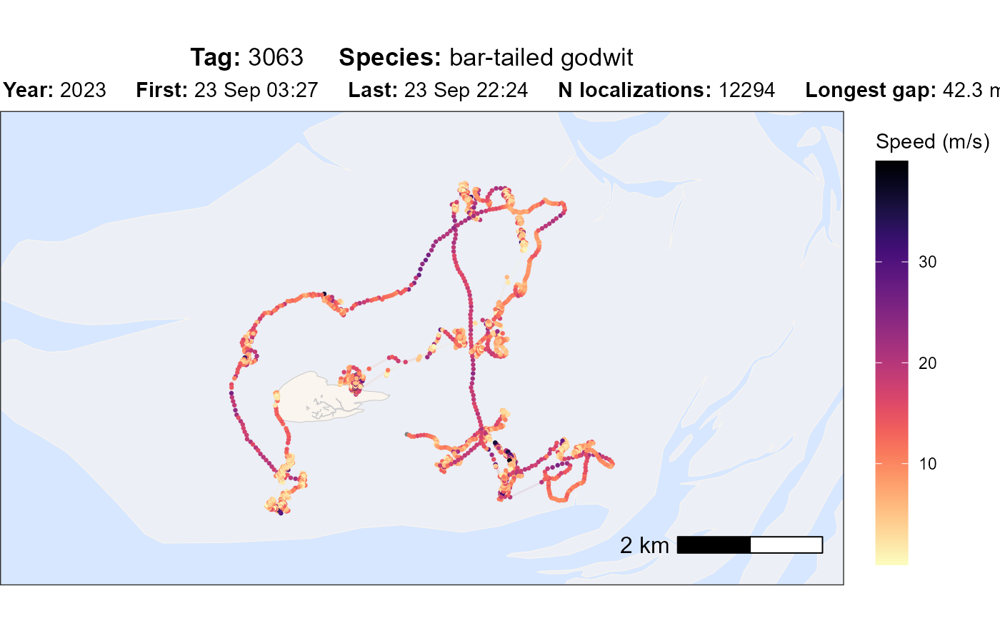
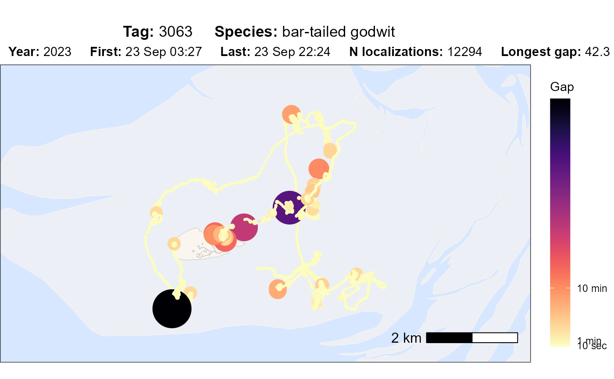

This function processes tracking data for a specific tag and generates a
visualization using ggplot2. It allows customization of colours, point
sizes, and track styles, and supports various display options such as
datetime, nbs (number of base stations / receivers), standard deviation,
speed_in and gap. The function can either return the plot or save it as an
png file.
Usage
atl_check_tag(
data,
buffer = 1000,
asp = "16:9",
option = "datetime",
scale_option = "A",
scale_direction = -1,
scale_trans = "identity",
scale_max = NULL,
first_n = NULL,
last_n = NULL,
highlight_first = FALSE,
highlight_last = FALSE,
highlight_outliers = FALSE,
point_size = 0.5,
point_alpha = 1,
path_linewidth = 0.5,
path_alpha = 0.1,
element_text_size = 11,
water_fill = "#D7E7FF",
water_colour = "grey80",
land_fill = "#faf5ef",
land_colour = "grey80",
mudflat_colour = "#faf5ef",
mudflat_fill = "#faf5ef",
mudflat_alpha = 0.6,
filename = NULL,
png_width = 3840,
png_height = 2160
)Arguments
- data
A
data.tablecontaining tracking data. Must include the columns:"tag","x","y","time", and"datetime".- buffer
Numeric. The buffer size in meters around the data points in the plot (default: 1000).
- asp
The aspect ratio of the plot (default:
"16:9").- option
Determines the colour mapping variable. Options are:
"datetime": Datetime along the track"nbs": Number of receiver (base) stations that contributed to the localization"var": Error as maximal variance of varx and vary"speed_in": Speed in m/s"gap": Gaps coloured by time and as point size
- scale_option
Character. The colour scheme option from
viridis(default:"A"). See https://search.r-project.org/CRAN/refmans/viridisLite/html/viridis.html for all options (A-H).- scale_direction
Numeric. Direction of the colour scale (-1 reverses, default: -1).
- scale_trans
Transformation of the scale. Default is "identity", (no transformation), could be e.g. "log", "log10" or "sqrt". See scale_*_trans() for all options.
- scale_max
If set, determines the max value of the scale for options: nbs (numeric), var (numeric), speed_in (numeric m/s), gap (numeric in seconds). Everything above the max value will get the max colour.
- first_n
Numeric (or NULL). If provided, only the first
nlocations are shown.- last_n
Numeric (or NULL). If provided, only the last
nlocations are shown.- highlight_first
Logical. If
TRUE, highlights the first point in the track (default:FALSE).- highlight_last
Logical. If
TRUE, highlights the last point in the track (default:FALSE).- highlight_outliers
Logical. If
TRUE, highlights all points that are flagged as outliers (needs preassigned column with outlier TRUE or FALSE) track (default:FALSE).- point_size
The size of the data points (default: 0.5).
- point_alpha
Numeric. Transparency of the data points (default: 1).
- path_linewidth
Numeric. The width of the connecting track lines (default: 0.5).
- path_alpha
Transparency of the track lines (default: 0.1).
- element_text_size
Adjust size of the text.
- water_fill
Water fill (default "#D7E7FF")
- water_colour
Water colour (default "grey80")
- land_fill
Land fill (default "#faf5ef")
- land_colour
Land colour (default "grey80")
- mudflat_colour
Mudflat colour (default "#faf5ef")
- mudflat_fill
Mudflat fill (default "#faf5ef")
- mudflat_alpha
Mudflat alpha (default 0.6)
- filename
Character (or NULL). If provided, the plot is saved as a
.pngfile to this path and with this name; otherwise, the function returns the plot.- png_width
Width of saved PNG (default: 3840).
- png_height
Height of saved PNG (default: 2160).
Value
A ggplot2 object with the specified option and adjustments. If
filename is provided, the plot is saved as a .png file instead of
being returned.
Examples
# packages
library(tools4watlas)
# path to csv with filtered data
data_path <- system.file(
"extdata", "watlas_data_filtered.csv",
package = "tools4watlas"
)
# load data
data <- fread(data_path, yaml = TRUE)
# subset bar-tailed godwit
data <- data[species == "bar-tailed godwit"]
# plot different options
atl_check_tag(
data,
option = "datetime",
highlight_first = TRUE, highlight_last = TRUE
)

atl_check_tag(data, option = "nbs")

atl_check_tag(data, option = "var")

atl_check_tag(data, option = "speed_in")

atl_check_tag(data, option = "gap")

# add outliers, for example for speed:
data[, outlier := speed_in > 35]
#> Index: <tag>
#> species posID tag time datetime x
#> <char> <int> <char> <num> <POSc> <num>
#> 1: bar-tailed godwit 1 3063 1695439669 2023-09-23 03:27:49 651543.5
#> 2: bar-tailed godwit 2 3063 1695439672 2023-09-23 03:27:52 651575.7
#> 3: bar-tailed godwit 3 3063 1695439675 2023-09-23 03:27:55 651606.1
#> 4: bar-tailed godwit 4 3063 1695439678 2023-09-23 03:27:58 651643.5
#> 5: bar-tailed godwit 5 3063 1695439681 2023-09-23 03:28:01 651691.1
#> ---
#> 12290: bar-tailed godwit 12610 3063 1695507854 2023-09-23 22:24:13 649743.6
#> 12291: bar-tailed godwit 12611 3063 1695507863 2023-09-23 22:24:22 649752.5
#> 12292: bar-tailed godwit 12612 3063 1695507866 2023-09-23 22:24:25 649746.3
#> 12293: bar-tailed godwit 12613 3063 1695507887 2023-09-23 22:24:46 649736.9
#> 12294: bar-tailed godwit 12614 3063 1695507896 2023-09-23 22:24:55 649743.2
#> y nbs varx vary covxy speed_in speed_out
#> <num> <int> <num> <num> <num> <num> <num>
#> 1: 5902230 15 0.5329509 2.313310 0.10732854 NA 11.3844028
#> 2: 5902219 15 0.5029352 1.983758 0.09377269 11.3844028 11.7861944
#> 3: 5902201 15 0.5653937 2.506961 -0.02486148 11.7861944 12.4663846
#> 4: 5902200 16 0.5044587 2.019984 0.15590394 12.4663846 16.1674181
#> 5: 5902209 13 1.1691016 1.720780 0.11504113 16.1674181 14.8436811
#> ---
#> 12290: 5902741 3 13.5388336 55.468941 -18.25960541 1.7321382 1.3135422
#> 12291: 5902733 3 27.1676407 142.222321 -33.07004166 1.3135422 3.2134422
#> 12292: 5902740 3 27.4818993 112.809326 -39.42582321 3.2134422 0.6931583
#> 12293: 5902751 3 18.7979851 101.395973 -21.76878929 0.6931583 1.8997880
#> 12294: 5902736 3 18.8564701 79.859215 -25.34779930 1.8997880 NA
#> outlier
#> <lgcl>
#> 1: NA
#> 2: FALSE
#> 3: FALSE
#> 4: FALSE
#> 5: FALSE
#> ---
#> 12290: FALSE
#> 12291: FALSE
#> 12292: FALSE
#> 12293: FALSE
#> 12294: FALSE
atl_check_tag(data, option = "speed_in", highlight_outliers = TRUE)